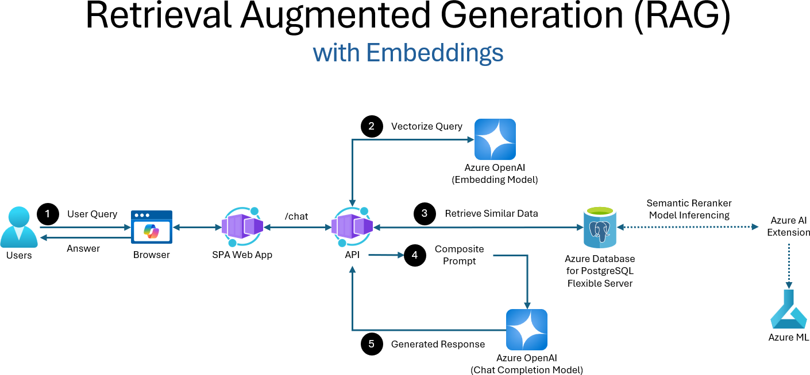

2. AI-enabled App Architecture¶
The objective of this solution is to accelerate the integration of AI capabilities into applications.
The extraction, validation, and storage of invoices and SOWs to minimize manual effort and boost operational efficiency. This solution architecture facilitates seamless integration across multiple Azure services, ensuring scalability, security, and optimized costs, while accurately aligning invoices with milestone-based deliverables and other contractual obligations.
By integrating AI capabilities into existing solutions, leveraging advanced AI validation, Document Intelligence, and a copilot enhanced by RAG...
Such an application can be integrated with existing financial and accounting systems to streamline the entire process. By leveraging AI and machine learning, it can continuously learn and improve its accuracy in detecting discrepancies and anomalies.
Click each tab below to learn more about how this pattern works in the context of the Woodgrove Bank application!
TODO: Rework the below to cover the starter application, which does not contain any AI functionality.
Click on each tab to understand the starter application archtiecture components and processing workflow.
The architecture has these core components:
- UI → the user interface for interacting with the system
- TODO: Add details about REACT and structure of SPA web app used for the frontend UI
- API → a Python API for integrating backend services
- TODO: Add details about FastAPI, Python, and the structures of the backend API
- Azure Database for PostgreSQL → the project database (vendors, invoices, statements of work (SOWs))
- Azure Container Apps → the app hosting service (API endpoint)
- Azure Managed Identity → for keyless authentication (trustworthy AI)
The Architecture "processes" incoming user requests received on the hosted API endpoint by taking the following steps:
-
Data Ingestion: SOWs, invoices and other related documents are ingested via a REACT single-page application (SPA). Internal users and external vendors can submit documents by uploading them through the web app, which then uploads them to Azure Blob Storage.
-
Workflow Trigger Mechanism: Upon receipt of new documents, an Event Grid trigger activates Python-based background worker processes:
a. Data Extraction and Processing: Azure's OCR (Optical Character Recognition) technology digitizes content from uploaded documents, such as SOWs and invoices.
b. Document Intelligence (Custom Model): A custom AI model within Azure's Document Intelligence service is tailored to extract specific data fields, like payment milestones, dates, amounts, and vendor details. This model is trained to recognize the structure of financial documents, improving data extraction accuracy.
c. Confidence Scoring and Validation: Each document is assigned a confidence score based on whether the documents contain the correct sections and fields.
d. Validation Using Azure OpenAI: Azure OpenAI language models, such as GPT-4o, are used to review all document data, employing natural language understanding to validate and cross-check information, ensuring high data integrity. The language model is used to cross-reference data between invoices and SOWs, evaluating payment milestone completion and billing, and preventing issues like payment delays. It also validates that appropriate compliance language exists in contracts and SOWs, helping to avoid compliance violations.
-
Secure Storage and Database Management: Validated data is chunked, vectorized using an Azure OpenAI embedding model, and stored in an encrypted Azure Database for PostgreSQL flexible server database, which uses vector embeddings for advanced search and retrieval. This supports efficient handling of structured and semi-structured data, facilitating downstream analytics. Azure Database for PostgreSQL flexible server supports JSON-based semi-structured data and vector embedding storage, enabling AI-enhanced queries. Embeddings can be generated directly from database queries using the Azure AI extension for PostgreSQL.
-
Document enrichment: The Azure AI extension for PostreSQL also enables data to be enhanced using Azure AI Services directly from the database. This capability provides rich AI functionality, such as text translation and entity and keyword extraction.
-
Copilot chat: An Azure OpenAI + LangChain copilot enables project managers and leadership to quickly get metrics, trends and processing timelines for contracts, SOWs, invoices, and vendors using a user friendly chat interface. Function calling via LangChain tools enables the copilot to implement a RAG (retrieval-augmented generation) pattern over data in the PostgreSQL database, using vector search to efficiently retrieve relevant documents and data.
The high-level solution architecture is represented by the following diagrams:
The attached image is a detailed flowchart illustrating the architecture of a data ingestion and AI processing system integrated with an AI copilot using Retrieval-Augmented Generation (RAG). The system is divided into two main sections: "Data Ingestion & AI Processing" and "AI Copilot with RAG." The flowchart shows how users interact with the system, how data is processed, and how AI-generated insights are delivered back to the users.

The second part of the application is an AI copilot, which allows users to ask questions and gain actionable insights over the data in the PostgreSQL database by leveraging a RAG architecture pattern. When users submit questions through the Copilot's chat interface, the query is processed by the SPA Web App and sent to the API. The API then communicates with Azure OpenAI to generate a prompt embedding, which is used to perform a vector search in the Azure Database for PostgreSQL Flexible Server. The search results are retrieved and used to generate a completion response containing AI-generated insights. This response is sent back to the API and displayed to the user, providing them with relevant and actionable information based on the data stored in the Postgres database. This process enables users to efficiently query and analyze large datasets, making it easier to derive meaningful insights and make informed decisions.
The attached image is a flowchart illustrating the architecture of an AI Copilot with Retrieval-Augmented Generation (RAG). The flowchart shows how users interact with the system through a browser-based Copilot Chat interface. The users' queries are sent to a Single Page Application (SPA) Web App, which communicates with an API. The API interacts with Azure OpenAI to generate prompt embeddings and perform vector searches. The vector search results are retrieved from an Azure Database for PostgreSQL Flexible Server (Vector Store). The completion response, which contains AI-generated insights, is then sent back to the API and displayed to the users through the SPA Web App. The system also includes components like Key Vault and Azure App Configuration for secure and efficient management of application settings and secrets.
The RAG Pattern¶
The workshop teaches you to build, evaluate, and deploy a retail copilot code-first on Azure AI - using the Retrieval Augmented Generation (RAG) design pattern to make sure that our copilot responses are grounded in the (private) data maintained by the enterprise, for this application.

Let's learn how this design pattern works in the context of our Contoso Chat application. Click on the tabs in order, to understand the sequence of events shown in the figure above.
The user query arrives at our copilot implementation via the endpoint (API)
Our deployed Contoso Chat application is exposed as a hosted API endpoint using Azure Container Apps. The inoming "user query" has 3 components: the user question (text input), the user's customer ID (text input), and an optional chat history (object array).
The API server extracts these parameters from the incoming request, and invokes the Contoso Chat application - starting the workflow reflecting this RAG design pattern.
The copilot sends the text query to a retrieval service after first vectorizing it.
The Contoso Chat application converts the text question into a vectorized query using a Large Language "Embedding" Model (e.g., Azure Open AI text-embedding-ada-002). This is then sent to the information retrieval service (e.g., Azure AI Search) in the next step.
The retrieval service uses vectorized query to return matching results by similarity
The information retrieval service maintains a search index for relevant information (here, for our product catalog). In this step, we use the vectorized query from the previous step to find and return matching product results based on vector similarity. The information retrieval service can also use features like semantic ranking to order the returned results.
The copilot augments user prompt with retrieved knowledge in request to model
The Contoso Chat application combines the user's original question with returned "documents" from the information retrieval service, to create an enhanced model prompt. This is made easier using prompt template technologies (e.g., Prompty) with placeholders - for chat history, retrieved documents, and customer profile information - that are filled in at this step.
The chat model uses prompt to generate a grounded response to user question.
This enhanced prompt is now sent to the Large Language "chat" model (e.g., Azure OpenAI gpt-35-turbo or gpt-4o) which sees the enhanced prompt (retrieved documents, customer profile data, chat history) as grounding context for generating the final response, improving the quality (e.g., relevance, groundedness) of results returned from Contoso Chat.
GraphRAG¶
TODO: Write up a short bit about GraphRAG
TODO: Include details about SEMANTIC RANKER MODEL () and include in the text above - Update data and flow diagrams to talk about semantic ranker for custom model inference. - Blog post to use are reference: https://techcommunity.microsoft.com/blog/adforpostgresql/introducing-the-semantic-ranking-solution-for-azure-database-for-postgresql/4298781 - Model to use: https://huggingface.co/BAAI/bge-reranker-v2-m3
Click on each tab to understand the archtiecture components and processing workflow.
The architecture has these core components:
- UI → the user interface for interacting with the system
- API → a Python API for integrating backend services
- Azure Database for PostgreSQL → the project database (vendors, invoices, statements of work (SOWs))
- Azure OpenAI → the model deployments (embedding, chat, eval)
- Azure Container Apps → the app hosting service (API endpoint)
- Azure Managed Identity → for keyless authentication (trustworthy AI)
The Architecture "processes" incoming user requests received on the hosted API endpoint by taking the following steps:
-
Data Ingestion: SOWs, invoices and other related documents are ingested via a custom REACT web application. Internal users and external vendors can submit documents by uploading them through the web app, which then uploads them to Azure Blob Storage.
-
Workflow Trigger Mechanism: Upon receipt of new documents, an event trigger activates Python-based background worker processes:
a. Data Extraction and Processing: Azure's OCR (Optical Character Recognition) technology digitizes content from uploaded documents, such as SOWs and invoices.
b. Document Intelligence (Custom Model): A custom AI model within Azure's Document Intelligence service is tailored to extract specific data fields, like payment milestones, dates, amounts, and vendor details. This model is trained to recognize the structure of financial documents, improving data extraction accuracy.
c. Confidence Scoring and Validation: Each document is assigned a confidence score based on whether the documents contain the correct sections and fields.
d. Validation Using Azure OpenAI: Azure OpenAI language models, such as GPT-4o, are used to review all document data, employing natural language understanding to validate and cross-check information, ensuring high data integrity. The language model is used to cross-reference data between invoices and SOWs, evaluating payment milestone completion and billing, and preventing issues like payment delays. It also validates that appropriate compliance language exists in contracts and SOWs, helping to avoid compliance violations.
-
Secure Storage and Database Management: Validated data is chunked, vectorized using an Azure OpenAI embedding model, and stored in an encrypted Azure Database for PostgreSQL flexible server database, which uses vector embeddings for advanced search and retrieval. This supports efficient handling of structured and semi-structured data, facilitating downstream analytics. Azure Database for PostgreSQL flexible server supports JSON-based semi-structured data and vector embedding storage, enabling AI-enhanced queries. Embeddings can be generated directly from database queries using the Azure AI extension for PostgreSQL.
-
Document enrichment: The Azure AI extension for PostreSQL also enables data to be enhanced using Azure AI Services directly from the database. This capability provides rich AI functionality, such as text translation and entity and keyword extraction.
-
Copilot chat: An Azure OpenAI + LangChain copilot enables project managers and leadership to quickly get metrics, trends and processing timelines for contracts, SOWs, invoices, and vendors using a user friendly chat interface. Function calling via LangChain tools enables the copilot to implement a RAG (retrieval-augmented generation) pattern over data in the PostgreSQL database, using vector search to efficiently retrieve relevant documents and data.